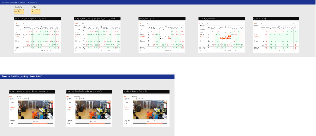
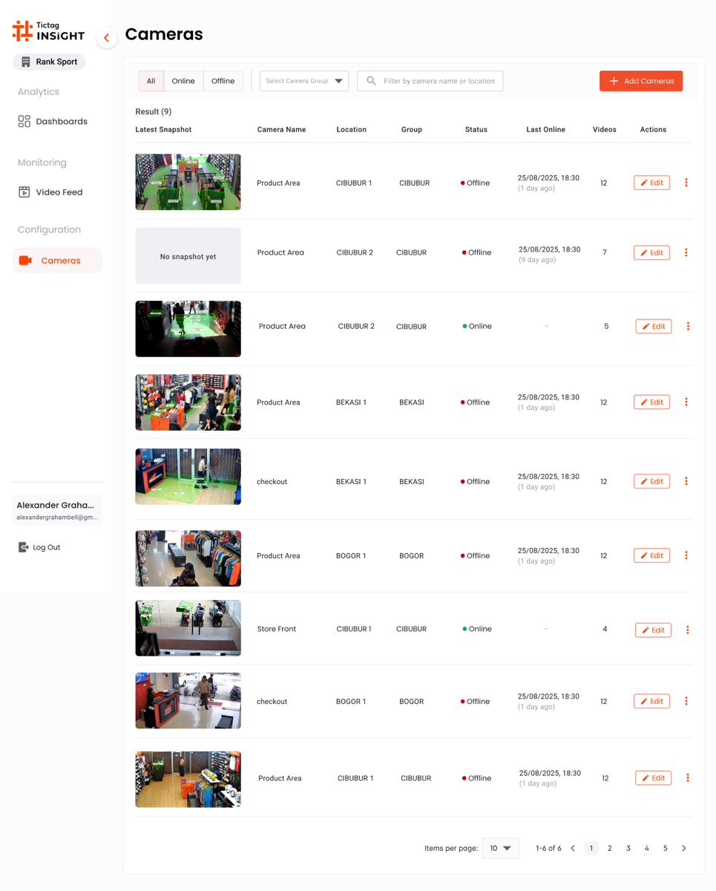
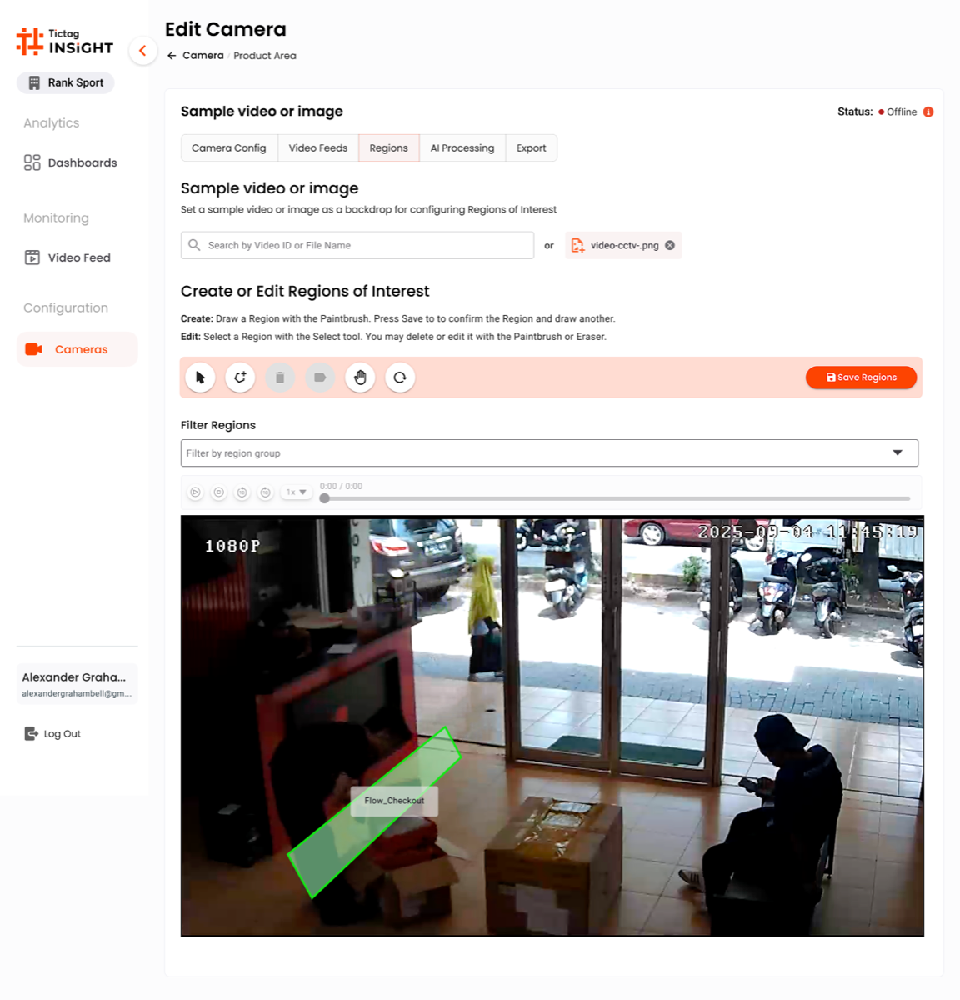
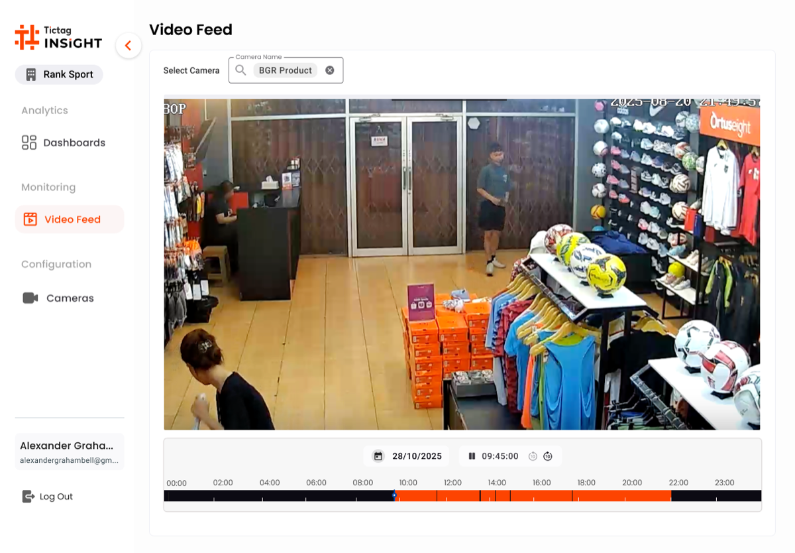
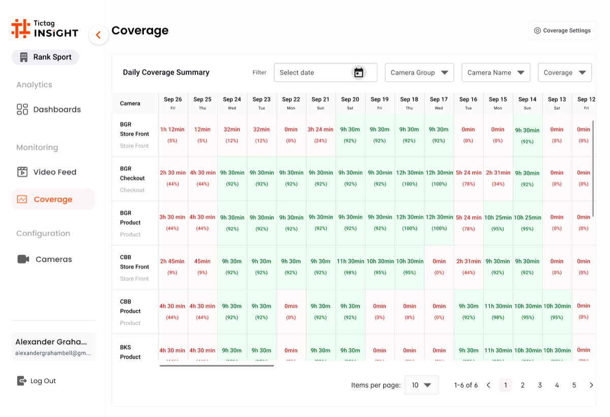

Making AI Video Processing
visible to the people who run it.
A live-feed monitoring interface for TicTag's AI video pipeline. We turned silent failures into actionable alerts, cut mean time to detect from 52 minutes to under 8, and gave operations teams a single pane of glass for every camera and model in production.
Role
Senior Product Designer
Timeline
2023 · 10 weeks
Platform
Web Dashboard
Industry
AI / Computer Vision
Mean Time To Detect
−87%
52 min → under 8 min
Eng. Escalations
−65%
Ops can now self-diagnose
Pipeline Uptime
99.2%
After launch, sustained 90 days
Feeds Onboarded
120+
Cameras live in week one
01 Context
Why operations teams were always the last to know — and what that cost the business.
The Challenge
TicTag runs an AI video intelligence platform across retail, transit, and urban surveillance networks in Singapore and the wider region. Every minute, the pipeline ingests hundreds of CCTV feeds, decodes them, runs object detection and behavioural analytics, and writes the results back to clients. When something failed — a camera went dark, a model hung, a queue backed up — nobody on the operations side could see it until a client called. By that point the damage had already been done.
The Mandate
As Senior Product Designer, I was asked to design a monitoring interface that made the health of every camera feed and every AI processing stage visible — at a glance, without engineering access. The tool had to work for ops teams on long on-call shifts, surface real failures without alert fatigue, and be trustworthy enough that the engineering team could stop being the first line of triage.
Incident response · within SLA
Before dashboard vs after
The biggest lift was at detection itself: incidents that used to surface only after a client phoned in were now caught in the first monitoring cycle. Every downstream stage — diagnosis, action, resolution — got faster as a consequence.
02 Process
Four stages, working backward from the operations team's reality.
System & Stakeholder Mapping
Stage 01I sat with the platform engineers to map the full AI pipeline — ingest, decode, detect, annotate, store — and tagged every point where a failure could happen silently. We ended up with a list of fourteen failure modes, eleven of which had no user-facing signal at all.
Operations Team Shadowing
Stage 02I spent five days alongside the ops team during their daily monitoring routine and on-call shifts. I watched them juggle five separate tools — Slack, Grafana, raw log tails, a spreadsheet of camera IDs, and direct phone calls to engineers — to answer the question, "is the system actually running?"
Alert Taxonomy Workshop
Stage 03With engineering, product and ops in the room, we defined a three-tier severity model — Critical, Warning, Info — and assigned each failure mode to a tier with a clear owner and a recommended first action. This became the spine of every alert in the dashboard.
Iterative Dashboard Design
Stage 04Lo-fi wireframes tested with ops in week three, hi-fi prototypes in week six, moderated usability testing in week eight, then handoff. Every visual element was tied back to a specific failure mode from stage one or a real moment we'd watched in stage two.
03 The Existing System
Audit of the "before"Five issues showed up over and over again, in every shadowing session and every retro.
Issue 01
No unified health view
The team checked five separate tools to answer one question. There was no single place where the system's state was true.
Issue 02
Alerts without severity
Every alert looked the same in Slack. A camera offline at a flagship retail client and a transient queue spike got the same visual weight.
Issue 03
Silent AI failures
When the detection model hung or stalled, ingestion kept running. There was no signal that the AI part of the pipeline had stopped doing real work.
Issue 04
Engineers as the only path
Every diagnosis required Slack-pinging an engineer. On-call rotation was burning out fast, and resolution depended on whoever was awake.
Issue 05
No historical context
Every incident felt new. The team had no way to tell whether a flapping feed was a known pattern or a genuine outage starting.
04 Field Research
Ops shadowing · Engineer interviewsMethodology
- → 5 days shadowing the ops team during regular and on-call shifts
- → 12 semi-structured interviews with operators, engineers and CSMs
- → Three months of alert log and incident ticket analysis
- → Diary studies during the on-call rotation
Participant snapshot
12
Operators
3
Engineers
4
Client CSMs
Quote · Operations Lead, week one
"I'm not monitoring the AI. I'm waiting for someone to tell me it broke."
Quote · On-call engineer
"Half my pages are things ops could've handled — if they had any way to see what was happening."
Key Research Findings
Trust
Status needs verification.
Operators never trusted that a feed was "working" without actively re-checking. They needed a state they could believe at a glance.
Severity
Priority must be shown, not inferred.
Operators were spending mental energy ranking alerts by importance. The system needed to do that work for them.
History
Patterns matter more than points.
A single point-in-time alert hid the difference between a flapping camera and a real outage. The dashboard had to show trend.
05 Design Principles
Observability rules of thumbFraming the Brief
How might we make AI failure immediately visible — and actionable without engineering?
Across the research, the same pattern came up: operators wanted to be useful, engineers wanted to be paged less, and clients wanted to stop being the ones who noticed first. The dashboard had to bridge those three needs without inventing a new role.
Our design direction was to surface system state on a hierarchy of severity, not volume — fewer, clearer signals tied to a specific owner and a specific next action. Everything in the UI had to earn its place by helping someone act, not just informing them.
01
Status First
Every screen opens with the answer to "is the system healthy?". Drilldown comes after the headline.
02
Severity as Language
Critical, warning and healthy each have their own visual rule — colour, shape, position — so priority reads in a glance.
03
Actionable, Not Just Informative
Every alert names an owner and a recommended first action. No alert ends in a question mark.
04
Show Trend, Not Just Now
Sparklines and recent-history strips sit beside every state, so flapping is distinguishable from sustained failure.
06 Wireframes
Lo-fi structural explorationWhat changed from the existing system
- Three status cards above the fold answering "healthy / warning / critical" before anything else.
- Live feed grid with each camera's health colour-coded on the tile itself, not buried in a list.
- Alert list with a clear severity column, ordered by impact and showing assigned owner inline.
- AI pipeline strip showing each stage's state, so silent ML failures became visible at the page level.
07 High Fidelity
Shipped interfaceDesign source · videofeed.fig
The Full Layout, Straight From The File

The source file splits the work into two surfaces. The top row is the operations dashboard — five connected views for the daily monitoring routine: an overview, a feed list, an alert centre, a per-camera deep-dive and a pipeline timeline. The bottom row is the inspection card — a focused view that wraps a single CCTV still with detection metadata for triage and reporting. The breakdowns below are reconstructions of those screens with the brand's navy + orange palette, the same camera footage the AI runs against, and the on-screen detection overlays that ship in production.

Screen 01 · Cameras
The operational hub.
A list of every camera in the tenant, with the latest snapshot, location, group and online status surfaced before anything else. Filters, search and the "Add Camera" CTA stay pinned at the top for fast triage during an on-call shift.

Screen 02 · Edit Camera
Region of Interest
A tabbed editor (Camera Config · Video Feed · Regions · AI Processing · Export). The Regions tab lets the team draw the polygon the AI will analyse — turning a generic camera into a tuned counting zone.

Screen 03 · Video Feed
Playback & Day Timeline
Pick a camera, pick a date, scrub through the day. The orange timeline at the bottom condenses 24 hours of footage into a single bar so ops can jump straight to a known incident window.

Screen 04 · Coverage
The accountability grid.
A daily coverage matrix — every product across every day of the period — answers the operational question that nobody could answer before: "did the AI actually run, and on what?". A single red cell in this grid is a missed audit window, and the team can act on it the same day.
Design Reasoning · Why this hi-fi works
Four Screens, One Daily Loop
The four screens compose a single operational loop. Cameras is where the day starts: a snapshot, a status dot and a last-seen timestamp on every feed in the tenant. From a row, ops jump straight into Edit Camera to draw or adjust the Region of Interest the AI runs against — the moment a generic CCTV feed becomes a tuned counting zone. Video Feed gives the playback surface for any incident window, and Coverage closes the loop by answering whether the AI ran across every product, every day.
- Snapshot beats text: the latest CCTV still sits on every Cameras row, so an offline feed is recognisable before reading the status column.
- Region of Interest is editable, not magical: the polygon sits on top of the live frame so the team can verify what the AI is actually looking at.
- Day timeline as primary navigation: the orange bar at the bottom of Video Feed turns 24 hours of footage into a single scrubable surface for incident review.
- Coverage is the auditor's view: a product-by-day grid where one red cell flags a missed audit window — the question "did the AI run today?" is answered visually.
- One sidebar, one tenant: the Tictag INSIGHT chrome is identical across all four screens, so context switching never costs orientation.
The flow took the team from "is the AI working?" — a question nobody could answer — to a routine ops can run in under five minutes a morning.
08 Before / After
- ✕ Five tools, no single source of truth
- ✕ Alerts had no severity hierarchy
- ✕ Silent AI failures only surfaced via client calls
- ✕ Engineers were the only diagnostic path
- ✓ One dashboard, one source of truth
- ✓ Severity reads in two seconds
- ✓ AI pipeline state visible at the page level
- ✓ Ops resolves first; engineering escalated only when needed
The
Impact.
"Mean time to detect dropped from 52 minutes to under 8. Engineering escalations fell 65%. For the first time, ops were the first to know — not the last."
Beyond the numbers, the dashboard re-shaped how the company thought about reliability. Operations went from a passive monitoring role to an active first line of defence, and clients stopped phoning to ask whether the AI was on.
Takeaways.
// 01
Visibility is a feature.
When failure modes are invisible, the product is incomplete. Designing for observability is product work, not platform work.
// 02
Hierarchy beats volume.
Fewer, clearer alerts outperform comprehensive but noisy ones. Severity has to be visual before it's textual.
// 03
Design for the power user.
Operations teams live in the tool. Optimise for speed and recall, not for first-time onboarding.